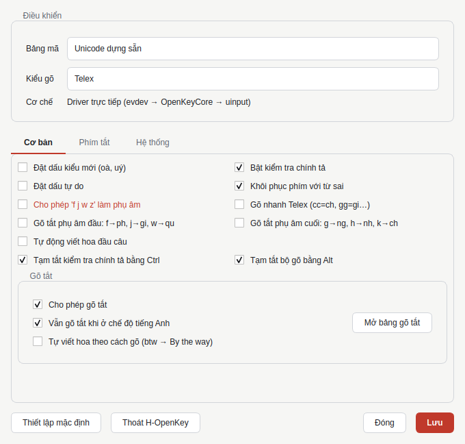
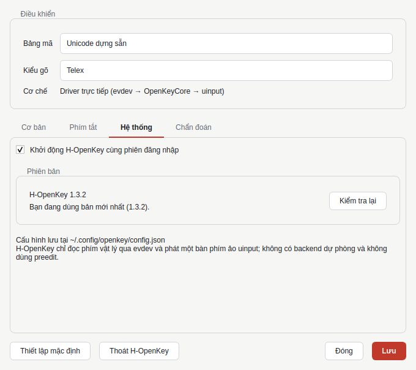

Linux 1.3.2
H-OpenKey
Bộ gõ tiếng Việt mã nguồn mở dành cho Linux, hỗ trợ Telex và VNI trên GNOME Wayland.
GNOME WaylandTích hợp trực tiếp
US QWERTYTự động khôi phục bố cục
Telex & VNIHỗ trợ Unicode
Tính năng
Thiết lập đơn giản, quản lý thuận tiện.
Tùy chỉnh kiểu gõ, quy tắc đặt dấu, phím tắt và cập nhật phiên bản trong cùng một ứng dụng.


Cài đặt
Cài đặt nhanh chóng bằng một lệnh.
Dành cho GNOME Wayland sử dụng bàn phím US QWERTY. Trình cài đặt sẽ yêu cầu xác nhận trước khi thêm bố cục H-OpenKey.
curl -fsSL https://raw.githubusercontent.com/hieu8123/h-openkey/master/Sources/OpenKey/linux/packaging/install.sh | bash
Hỗ trợ Ubuntu, Fedora, Arch Linux và openSUSE. Quyền sudo chỉ được yêu cầu khi cấu hình thiết bị và bố cục bàn phím.